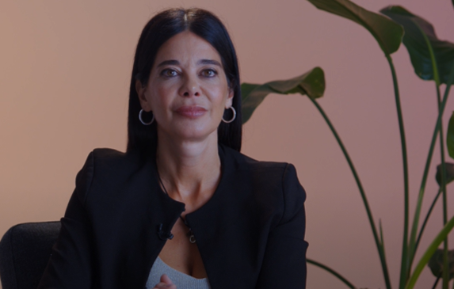

EN COLABORACIÓN CON BANCO SANTANDER
SEGUNDA TEMPORADA
Nuevas historias, ideas y aprendizajes para afrontar un mundo profesional que no deja de transformarse
Descubre la nueva temporadaUn lugar para descubrir nuevas habilidades, adaptarse y seguir creciendo en un mundo donde el trabajo está en constante cambio. Porque el futuro se construye poco a poco, incorporando conocimientos, explorando nuevos caminos y manteniendo viva la curiosidad.
Desliza para descubrir másNUEVA TEMPORADA · 6 EPISODIOS
¿Qué habilidades necesitas aprender para cambiar de trabajo? ¿Cómo usar la inteligencia artificial en tu día a día? Silvia Leal, experta en IA y tendencias del futuro, nos da las claves para seguir creciendo en el mundo laboral.

EPISODIO 01
Ver episodio6 de cada 10 personas*
consideran que saber utilizar la inteligencia artificial será imprescindible para mantener su empleabilidad
8 de cada 10 personas*
creen que necesitarán seguir formándose durante toda su vida profesional
* Según el informe Habilidades del Futuro de Banco Santander. Accede aquí al informe completo
SANTANDER OPEN ACADEMY
Mantenerse al día requiere seguir adquiriendo nuevos conocimientos y habilidades. Santander Open Academy es una plataforma global de aprendizaje de Banco Santander que pone a disposición de cualquier persona formación gratuita para desarrollar competencias profesionales y mejorar su empleabilidad, a través de cursos, becas y otros contenidos formativos.
Descubre Santander Open AcademyTEMPORADA 1
Descubre los episodios y las historias con los que comenzó Aprender cambia todo: nuevas habilidades, transformación profesional e inspiración para avanzar en un mundo en constante cambio.
Descubrir la primera temporadaCoordinación: Silvia Resola | Diseño y maquetación: Alejandra Santander | Vídeo y fotografía: Ramen Studio. Un proyecto de Brandslab. Godó Nexus.